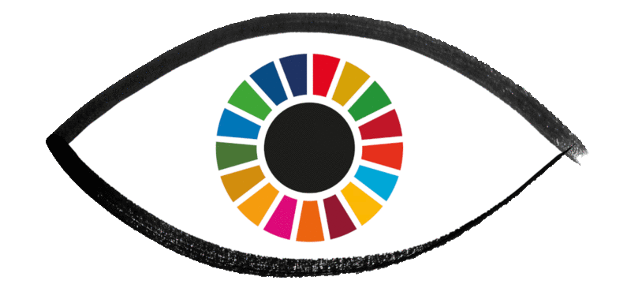

Home Page |
SDG Goal 8 |
SDG Goal 11 |
The Sustainable Development Goals (SDGs), also known as the Global Goals, were adopted by the United Nations in 2015 as a universal call to action to end poverty, protect the planet, and ensure that by 2030 all people enjoy peace and prosperity.

The 17 SDGs are integrated—they recognize that action in one area will affect outcomes in others, and that development must balance social, economic and environmental sustainability.
Countries have committed to prioritize progress for those who're furthest behind. The SDGs are designed to end poverty, hunger, AIDS, and discrimination against women and girls.
The creativity, knowhow, technology and financial resources from all of society is necessary to achieve the SDGs in every context.
The Sustainable Development Goals (SDGs) or Global Goals are a collection of 17 interlinked global goals designed to be a "blueprint to achieve a better and more sustainable future for all".They are included in a UN Resolution called the 2030 Agenda or what is colloquially known as Agenda 2030.The Sustainable Development Goals (SDGs) define the world we want. They apply to all nations and mean, quite simply, to ensure that no one is left behind. Once, realizing such dreams was almost always up to national Governments.